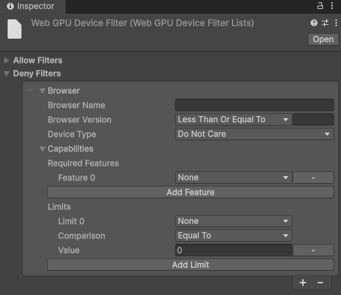

The WebGPU Device Filter asset allows you to control exactly which browsers and devices can run your Unity application using the WebGPU API.

Use the Allow Filters and Deny Filters lists to fine tune which browsers you want to allow to run your application with the WebGPU API.
You can add multiple entries to each list. Unity evaluates these entries to determine whether to allow or block the WebGPU API for the user’s current browser.
If you include a browser in both the Allow Filters and Deny Filters lists, the allow filter takes precedence and the browser uses the WebGPU API. This means you can use the Deny list to restrict a broad category of under-performing browsers, and use the Allow list to explicitly enable specific browsers within that group that perform well.
The Allow Filters list defines the browsers permitted to use WebGPU as the default graphics API for your Unity application. You can use this list to allow specific, high-performing browsers even if they fall into a broader category that you have otherwise restricted in the Deny Filters list.
The Deny Filters defines the browsers restricted from using the WebGPU API. You can use this to block broad categories of under-performing browsers or specifically target problematic browser versions and hardware limitations.
By default, Unity only restricts a browser from using WebGPU if the browser explicitly lacks support for it. However, you might want to use the Deny Filters list to restrict certain browsers or devices if:
The restricted browsers use a fallback graphics API set in the Player settings to run your application. If you don’t include an alternative graphics API (like WebGL2) in your Player settings, your application won’t launch on any browsers that meet the rejection criteria.
Each filter list contains a set of parameters to enter browser specifications. You can add multiple entries to each filter list. Unity then allows or restricts the browsers that match the specifications entered in the filter lists from using the WebGPU API.
You can specify values for the following parameters to identify a browser or set of browsers:
Each entry in a filter list consists of parameters that define a browser or device profile. For an entry to match a user’s browser, the browser must meet all the specified parameter values in that entry (a logical AND relationship).
You can also use C# regular expressions for the Browser Name. For example, use Chrom*|Edge to match Chrome, Chromium, or Edge browsers.
If you set the exact same parameter values in both the Allow and Deny lists, Unity ignores the criteria defined by those values.
You can use comparison operators in the filter list parameters (such as Greater Than or Equal To, Less Than) to create flexible targeting.
The Unity Editor displays an error for an invalid regular expression. If the parameter values are set with invalid regular expressions, the application build fails.